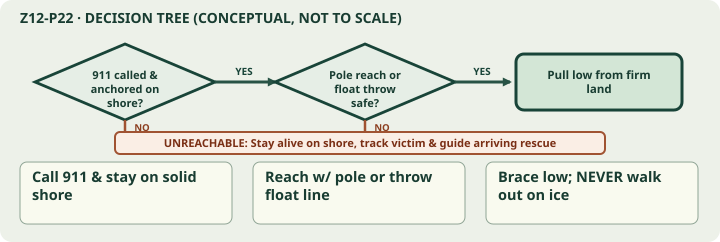

Z12-P22 · Extreme environments · Adapted historical material
Execute shore-based witness Reach-Throw-Don't-Go ice rescue safely
Assist someone who broke through ice without creating a second drowning casualty on weak ice.
When it applies · High-consequence witness response from solid shore; requires qualified ice-rescue review and dry-land rehearsal only.
Equipment · Phone for 911, long rigid reach pole/branch, buoyant throw bag/float line or linked dry jackets from anchored solid ground.

Actions
- STOP ON SOLID SHORE AND CALL 911 FIRST: Never run or walk out onto broken ice toward a struggling victim—untrained rescuer breakthroughs routinely cause double fatalities.[X18, T01, T02]
- From stable shore, reassure the person and offer a reach or throw aid only if it can be done safely without entering the hazard.[X20]
- Let go of a reach aid if you are being pulled in. If safe help is out of reach, remain on shore and report the person’s position to responders.[X20, T02]
Failure recognition · Sprinting across cracking ice to grab a victim's outstretched hand and plunging into the same freezing hole.[X18, T01]
Verify · Confirm 911 is activated first, rescuers remain anchored on solid land and only dry-rehearsed reach/throw aids are deployed.[X18, T01, T02, ED]
Stop or change course · Stay on land. Do not enter the water or go onto ice to perform an improvised rescue.[X20, T01]
Evidence and editorial notes
- T01 · American Red Cross · First Aid Steps (current web edition)
- Section: First Aid Steps > Check the scene; check the person · Conditions: Lay responder in United States; assess safety before contact
Support: Check scene safety, responsiveness, breathing and immediately life-threatening conditions.
Limitations: Lay guidance does not replace advanced clinical or rescue protocols. · Conflicting evidence: None; universal first-response opening gate.
Editorial note: Anchors scene-safety-first rule across Z01. · Specialist reviewer: EMS and wilderness medicine
Primary source · checked 2026-11-24 - T02 · American Red Cross · First Aid Steps (current web edition)
- Section: First Aid Steps > Call 9-1-1 · Conditions: Lay emergency response to unresponsiveness, abnormal breathing or severe bleeding
Support: Activate EMS and get needed equipment. Follow dispatcher directions and act within training.
Limitations: Remote locations may delay EMS arrival, requiring sustained stabilization after activation. · Conflicting evidence: None; aligns with NPS-E.
Editorial note: Mandates early emergency activation and dispatcher adherence. · Specialist reviewer: EMS and wilderness medicine
Primary source · checked 2026-11-24 - X18 · Minnesota DNR · What if you fall in? (Current web edition)
- Section: Self-rescue after falling in · Conditions: Cold-water ice breakthrough on frozen lakes or rivers
Support: Face the direction you came from if able, regain breathing control, kick and use the edge or picks, and remain low after exit. Prior support is not guaranteed safe ice.
Limitations: Ice rescue carries extreme drowning risk for untrained rescuers; dry practice and qualified rescue review are mandatory. · Conflicting evidence: Directly aligns with B013 P06–P08 and P14; carries high-consequence specialist review hold.
Editorial note: Anchored in Z12 ice-breakthrough cards and logged in the Astra escalation register. · Specialist reviewer: Ice rescue, EMS and wilderness medicine
Primary source · checked 2026-11-24 - X20 · Minnesota DNR · What if someone else falls in? (Current web edition)
- Section: Call 911; Reach and Throw · Conditions: Untrained witness on stable shore
Support: Call 911. Offer assistance from safe shore only and release a reach object if it begins pulling you in.
Limitations: The draft lay boundary excludes going onto ice. · Conflicting evidence: See A01 cross-zone review.
Editorial note: Use only within the stated conditions. · Specialist reviewer: Ice rescue and dispatch
Primary source · checked 2026-11-24
Source lineage · B013-P07/P14 witness rescue and MN DNR ice; adapted historical material · Classification · Adapted historical material.